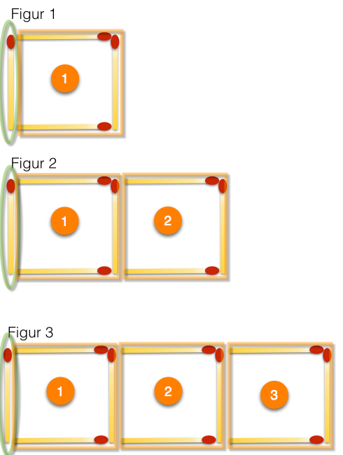
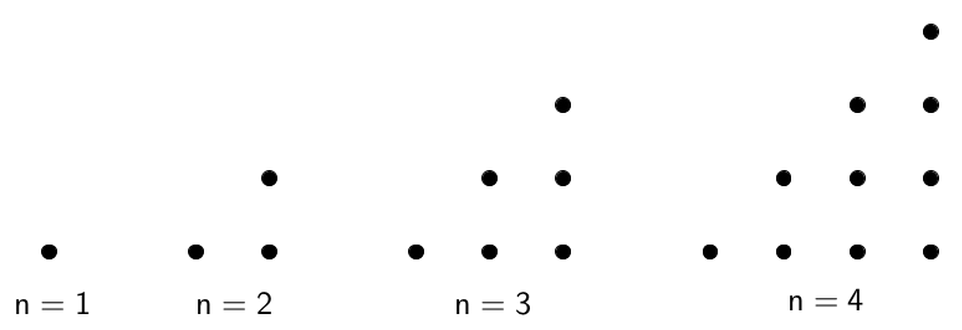

Figurer og variable størrelser
Contents
Figurer og variable størrelser¶
I matematikk er det viktig å kunne utforske og oppdage mønster og sammenhenger. I denne leksjonen skal du først se etter mønster i figurtall. Dette kan hjelpe deg å forstå hvordan bokstavregning kan være nyttig i generaliseringer og problemløsing. Du skal lære at vi kan regne med variabler på samme måte som vi regner med vanlige tall.
Eksempel 1¶
Nedenfor ser du de tre første figurene som er laget av fyrstikker.

Hvor mange fyrstikker er det i figur nummer 50?
Løsning:
I figur 50 er det 151 fyrstikker. Det er flere måter å finne det på. En er å stille opp antall fyrstikker og figurnummer i en tabell
| Figurnummer |
Antall fyrstikker |
|---|---|
| 1 | 4 |
| 2 | 7 |
| 3 | 10 |
| 4 | 13 |
| 5 | 16 |
| 6 | 19 |
| 7 | 22 |
| 8 | 25 |
| 9 | 28 |
| 10 | 31 |
Med utgangspunkt i det som står i tabellen kan vi observere noen egenskaper som kan hjelpe oss til å finne svaret.
Når ved en fordobling av figurummeret vil antall fyrstikker være en mindre enn dobbelt så mye. Figur 2 har 7 fyrstikker. Figur 4 har 7·2-1=13 fyrstikker.
Figur 20 får da 2·31-1=61 fyrstikker.
Slik kan vi tenke oss fram til svaret.
En annen måte er å se at antallet øker med 3 per figur slik at tabellen blir slik
| Figurnummer | Antall fyrstikker |
|---|---|
| 1 | 4 |
| 2 | 4+3·1 |
| 3 | 4+3·2 |
| 4 | 4+3·3 |
| 5 | 4+3·4 |
| 6 | 4+3·5 |
| 7 | 4+3·6 |
| 8 | 4+3·7 |
| 9 | 4+3·8 |
| 10 | 4+3·9 |
Da kan vi finne antall fyrstikker i figur nummer 50 som: 4+3·49=151
Det fins sikkert flere framgangsmåter som alle er like riktige. Svaret skal uansett bli det samme: 151
Oppgave 1
I forrige eksempel fant vi ut hvor mange fyrstikker det var i figur nummer 50. Kan du finne et matematisk uttrykk som viser hvor mange fystikker det er i figurnummer \(n\)?
Klikk på knappen til høyre for å vise løsning!

Antall fyrstikker i figur nummer \(n\) kan vi skrive som:
Bildet ovenfor viser en måte å komme fram til dette uttrykket. Hver figur består av én fyrstikk som er merket med grønt. Den første figuren har én samling med tre fyrstikker i tillegg. Den andre har to samlinger med tre fyrstikker. Den tredje har tre slike samlinger, og så videre. Hver av disse samlingene er markert med et oransje rektangel.
Kanskje kom du fram til denne formelen:
For å komme fram til den gjelder samme tankegang, men da starter vi med fire fyrstikker i den første og legger til samlinger med tre fyrstikker fra og med den andre figuren. Begge formlene er naturligvis riktige og ved litt regning kan vi se at de er like.

Oppgave 2
Figurene over viser noen trekanttall. De har fått navnet sitt etter mønsteret som dannes når vi tegner figurene. Som du ser blir det trekanter!
Her ser du de fire første trekanttallene. Du ser at det første trekanttallet er 1, det andre 3, det tredje 6 og det fjerde 10.
Hva blir trekanttall nummer 7?
Klikk på knappen til høyre for et hint!
Når du skal jobbe med firgurtall er det to framgangsmåter som kan være lure. Den ene er å se etter mønster direkte i tallene. Legg merke til at det tredje trekanttallet kan skrives som
og det fjerde kan skrives som
Hva blir da det syvende trekanttallet? Den andre framgangsmåten er å se etter mønstre i figurene. Kanskje kan du se akkurat det samme i prikkmønsteret?
Kan du finne en formel for trekanttall nummer \(n\)?
Klikk på knappen til høyre for en løsning!
Det som bestemmer et trekanttall, er hvilket nummer det er i rekken. Når du skal lage en variabel for nummer, brukes ofte bokstaven \(n\).
Trekanttall nr \(n\) kan skrives generelt som
I filmen nedenfor viser vi hvordan vi kan komme fram til formelen i løsningen ovenfor.
Eksempel 2¶
I filmen nedenfor viser vi hvordan vi kan regne ut
ved å bruke et smart triks.
Oppgave 3
Fra tidligere vet vi at trekanttall nr \(n\) kan skrives generelt som
Tallet 1326 er et trekanttall. Hvilket figurnummer gir dette tallet?
Klikk på knappen til høyre for et hint!
Her må vi prøve oss fram. Se på formelen. Kan du finne et produkt \(n\cdot(n+1)\) som blir to ganger 1326 ?